1 / 141

2 / 141

This is a two-part talk. The first part is a bit more like an artist’s talk, where I’ll introduce my work and the idea of publishing as an artistic practice
3 / 141

but where we’ll end up is somewhere here, trying to get closer to this idea of urgentcraft, and how art and design can be used to loosen power.
4 / 141
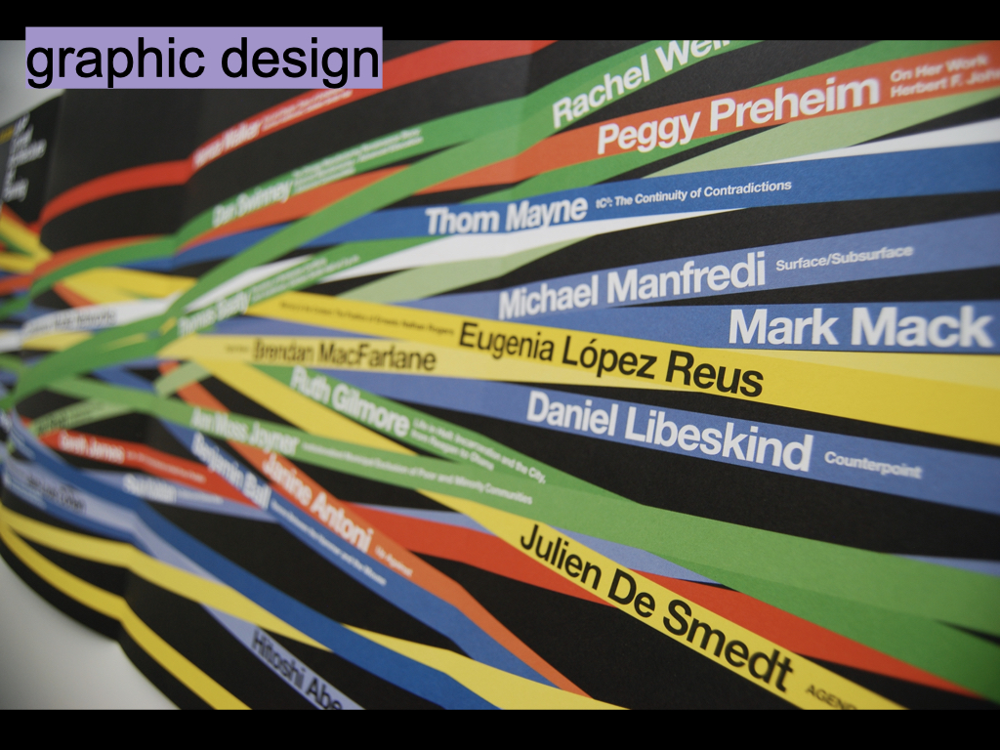
Worked as a self-taught graphic designer for many years, with my own design studio in NYC. Client-based work that focused on branding, typography, and traditional corporate identity.
5 / 141

I definitely enjoyed this work and the business was able to thrive for about 15 years.
6 / 141

But after so much time accommodating the needs of clients, I reached a limit, and felt like I needed more.
7 / 141

About 10 years ago, I really started asking questions of myself, like what do I need from design? What would it look like to call myself an artist?
8 / 141

And I was able to ask these questions by using the book form.
9 / 141

And I really started thinking about the printed book as a container for ideas. Sounds kind of obvious now, but this was totally new for me. This is a project that I did in collaboration with the John Cage Trust.
10 / 141

And this one was during the London 2012 Olympics. It’s a set of 12 books about the towns of Weymouth, England and Weymouth, MA.
11 / 141

The books are like little journeys exploring perception and history and the connections and disconnects between the two towns.
12 / 141

I even created a typeface that I used throughout, based on a fragment of type that I found in a shed in one of the Weymouths.
13 / 141

But this project was most significant for me because of the way the work was distributed. I made a small edition of each of the 12 volumes and actually handed them out in public space over the 12 days of the olympics.
14 / 141
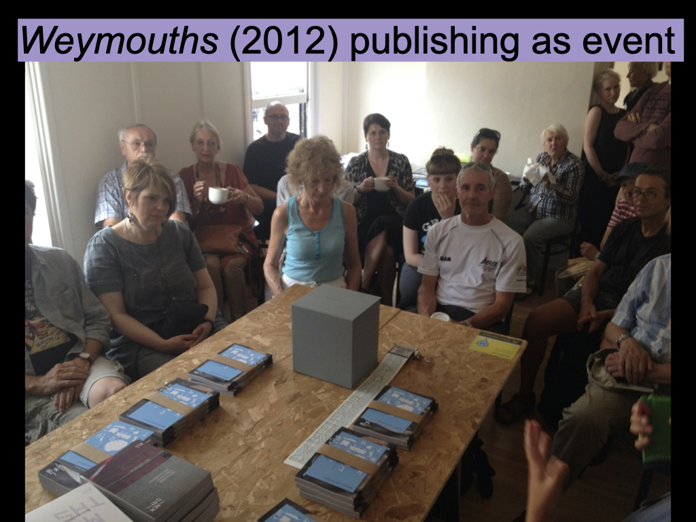
It was wild because it was really performative and durational and it tested my own stamina, but super rewarding because of how I got to meet each person who got a book.
15 / 141

And I did a few more projects like this, site-specific publishing projects that were durational and event-like.
16 / 141

This is one I did in Iceland, in a small fishing village in northern Iceland, where I spent the whole summer getting to know people in the town. The population was 530, so that became the name of the project, and the number of pages in the book.
17 / 141
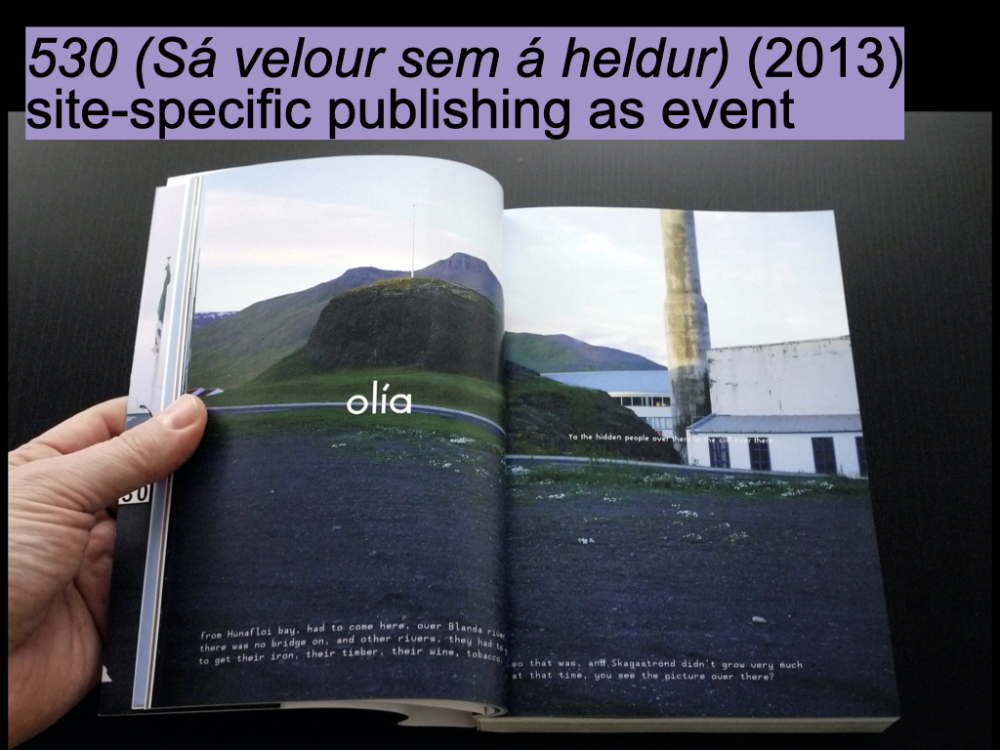
These were really intense projects, because they involved spending time and embedding myself in the place
18 / 141

and at the end of this one I printed just 50 copies with a printer in Reykjavik, and gave most of them to people in the village who appear in the book, but I also hid a few
19 / 141
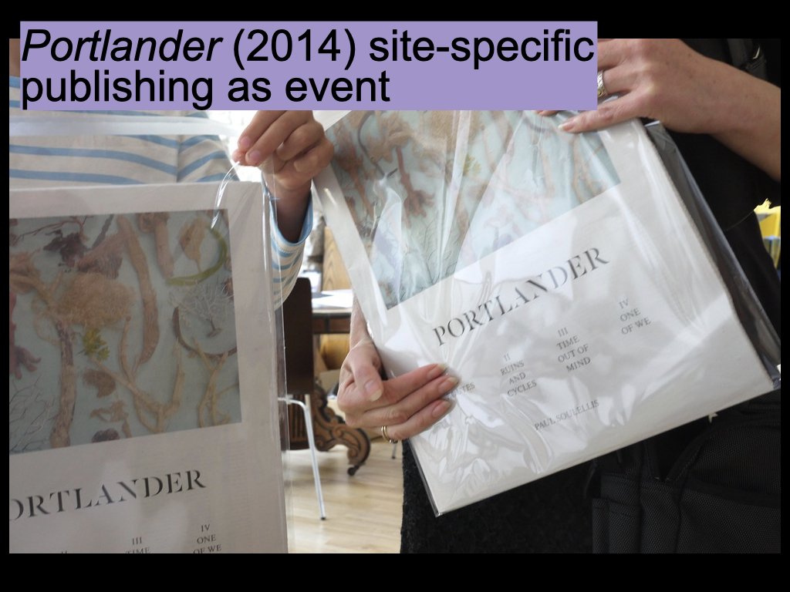
and I did one more project like this in England, on the isle of Portland. These projects were exhausting and extremely difficult, because of the emotional depth that was required in order for it to be meaningful. At the end of this one I said ok, no more.
20 / 141

And it’s around this time that I started teaching at RISD. I was also getting to know a number of artists who were working with the internet, but experimenting with print — seeing what happens when we slow the internet down by printing it out
21 / 141

and this very quickly turned into another kind of project, a curatorial one. I started collecting artists’ books and ephemera made by artists who were printing the internet in different ways, and I called this Library of the Printed Web
22 / 141

and this became a way to ask questions about materiality, about speed in relation to reading, and how network culture was shifting, particularly now that the internet was ubiquitous with the introduction of the Facebook wall in 2004 and the iPhone in 2007
23 / 141
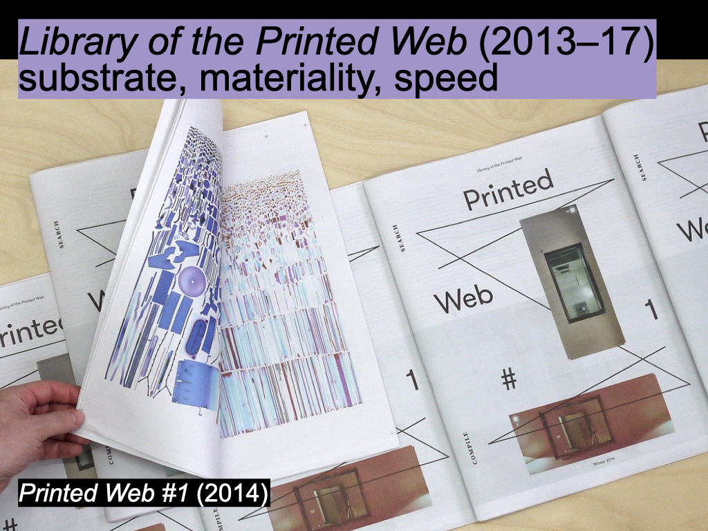
and this also became a publishing project. The Printed Web was a way to introduce new work by some of these artists
24 / 141

and this was a lot of fun, publishing this work and writing about it and exhibiting it, and the project received a lot of attention.
25 / 141

And in the end I produced about 20 publications through Library of the Printed Web, and starting thinking about this as publishing as an artistic practice. And then in 2017 the entire project was acquired by MoMA Library.
26 / 141

That was a satisfying moment, the collection of about 250 works going to MoMA, the ultimate archive.

28 / 141
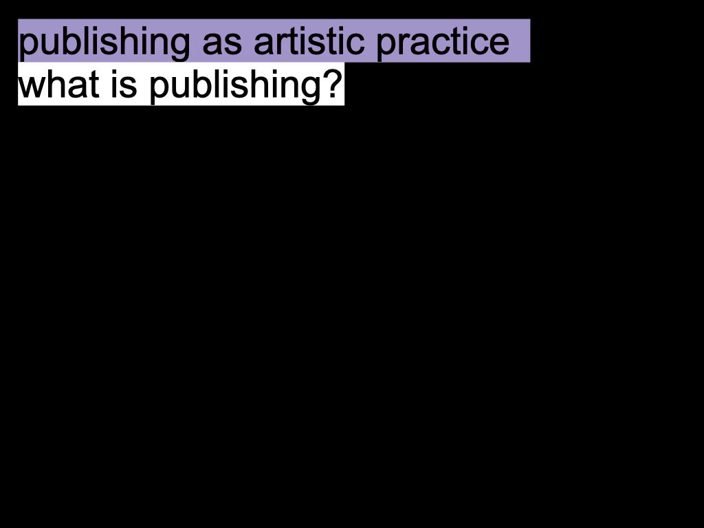
and step back from my own work a bit, and ask some larger questions about these terms. When we talk about publishing as artistic practice, what do we mean?
29 / 141

and I like to think about it in terms of making public, that publishing at its very essence is about putting something in public
30 / 141
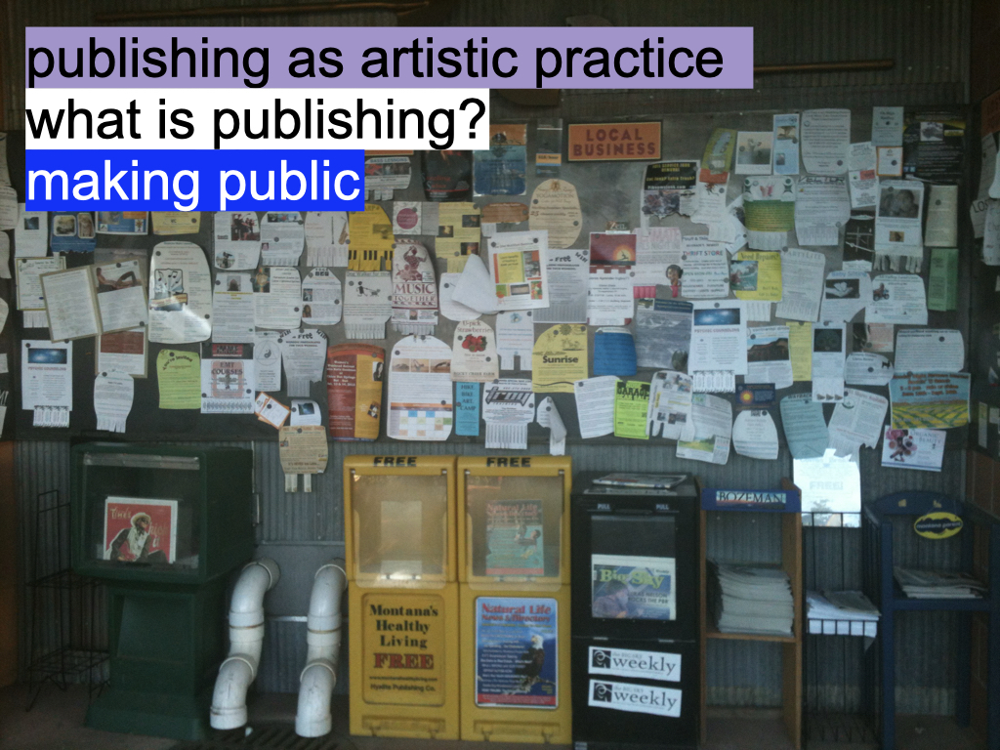
and it’s this image of a community bulletin board that I love to come back to as the most basic example of making public. But is this publishing? I’d say it is — selecting something to amplify, and posting it in public to give it an audience
31 / 141
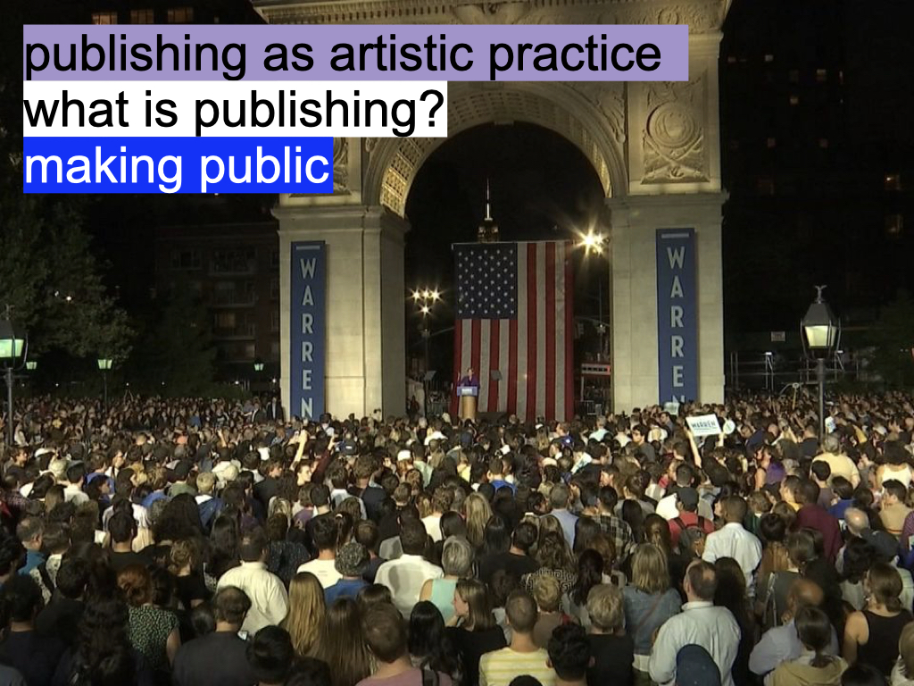
but then what about this? is this publishing? it’s certainly making public, but less about posting and more about performing for a very specific public. Addressivity. Perhaps not everyone but those who have gathered to listen, so that asks us to look quite closely at what we mean by public. Who’s listening?
32 / 141

Is this an act of publishing? This kind of making public interests me deeply, and we’ll come back to this image in a minute,
33 / 141
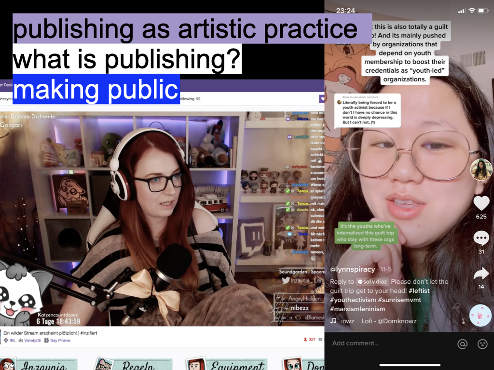
as does this, a newer form of making public that is very much about durational performance. I love stretching the idea of publishing into these slippery places
34 / 141

and here, which is perhaps a bit more familiar. Platforms that have become places for us to publish on a daily basis.
35 / 141

And of course this, the good old table at an art book fair, allowing an artist to be on one side and the public to be on the other. Direct engagement over the published material, in physical space.
36 / 141

But these aren’t my ideas … I’m borrowing them from theorist Michael Warner, who wrote about publics in this text that I come back to again and again, first of all because it’s pretty dense, so when I teach it I usually re-read it with students to try to get a little bit further with it
37 / 141

But basically in this text Warner is making a distinction between the public, everyone out there, vs a very specific public, say those people who have gathered specifically around something. And therefore the notion of a plurality of publics. Multiple publics.
38 / 141

And so Warner says that to publish is not just to “make public,” but to make “A” public through the circulation of material. A public gathers around the work and generates discourse, and only then has a public formed.
39 / 141

So, previously we may have thought about publishing as the production of objects — you make books.
40 / 141

Warner turned this around for me. Publishing is less about the objects you make, and more about the action you take, how those objects circulate. Your publics form around this action, this dispersion.
41 / 141

and so we can talk about publishing as an act,
42 / 141

the gesture of publishing — what are publishing gestures, which we’ll get to in a minute
43 / 141

and the idea of performing publishing.
44 / 141

That’s why I’m so intrigued by artistic publishing that takes this form now, things like live streaming as an act of publishing
45 / 141

or the publishing of digital files for download, like this series called The Download that I curated at Rhizome for a few years, where artists created works that were entirely contained within ZIP files,
46 / 141
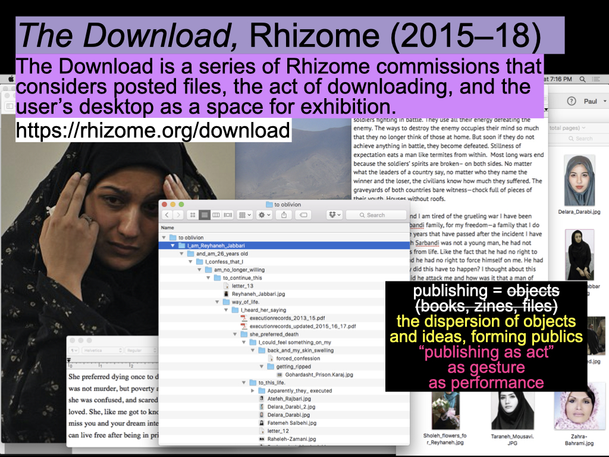
so the act of publishing is located right there in the uploading and downloading of the files, the private performance of these files on the viewers’ desktops, and the circulation of these files on the internet.
47 / 141

There’s a whole world of net art that looks at publishing in this way, in the realm of digital networks, and for Rhizome’s Net Art Anthology I was able to do some writing that’s become really important for me,
48 / 141

published in this beautiful book, a huge catalog of net art, where I wrote about the post as an essential act of publishing —
49 / 141
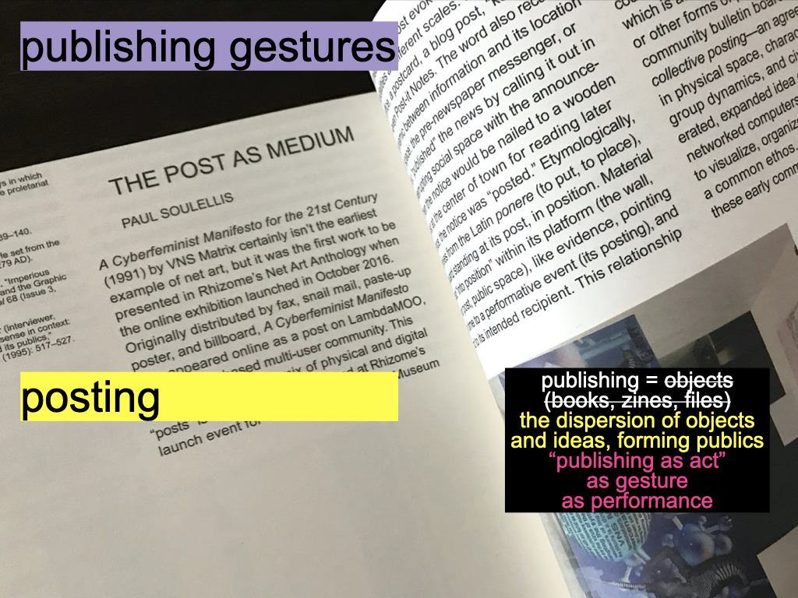
Posting as a publishing gesture. in the sense of posting a photo or making a blog post, or posting a tweet, but also going into the history of this word, which I’ve never really been able to find much about
50 / 141

of course we can trace the word back through time by looking at other words that embed the gesture of posting within it, like “the poster” — the most basic act of putting something up on a vertical surface in public space. This goes back thousands of years, perhaps tens of thousands of years, making marks on walls, so it’s a fundamental gesture
51 / 141
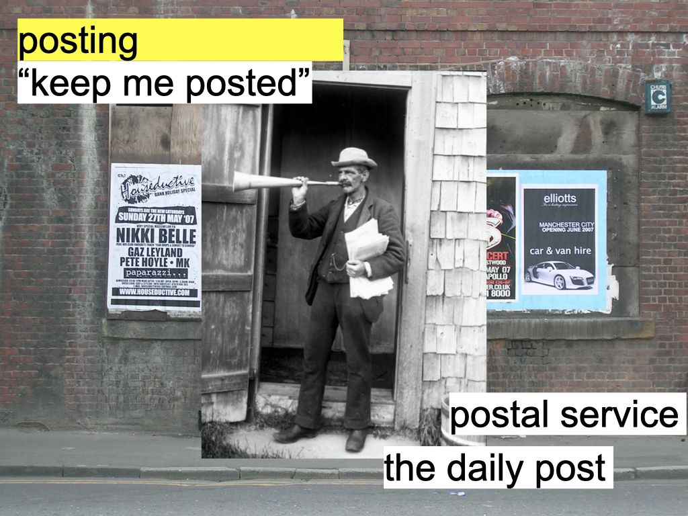
But do you ever wonder about language like “keep me posted,” or the post office, or the daily post? This is more legend than scholarly research, but it seems as though this language can be traced back to the figure of the town crier, who would announce the news at the center of town, to people who were probably were not literate, or didn’t have access to books. When the town crier was finished reading the news, he would nail it to a door post at the center of town, and so, the news was posted.
52 / 141

So of course we’ve got a whole history of artists who have used this very basic gesture of posting in public to great effect, from Jenny Holzer’s truisms in the 70s
53 / 141

to Stephanie Syjuco’s recent use of the casual flier to distribute URLs for downloading free PDFs
54 / 141

to Demian DinéYazhi’s bold letterpress words that are just taped to the window across the street from a controversial statue in St Louis, Missouri
55 / 141
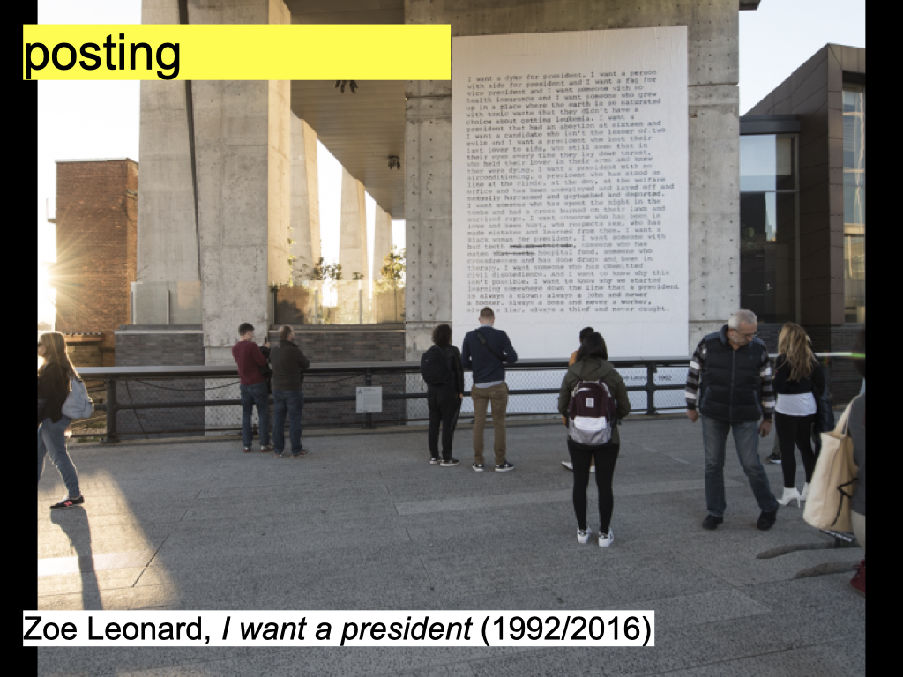
and Zoe Leonard’s posting of the statement “I want a dyke for president” early in the 1990s when the poet Eileen Myles ran for president, and then again during the 2016 election, shown here as a gigantic post on the High Line in NYC
56 / 141

and Julia Weist’s use of a billboard to amplify a made-up word — a fascinating, complicated project that’s worth digging into
57 / 141
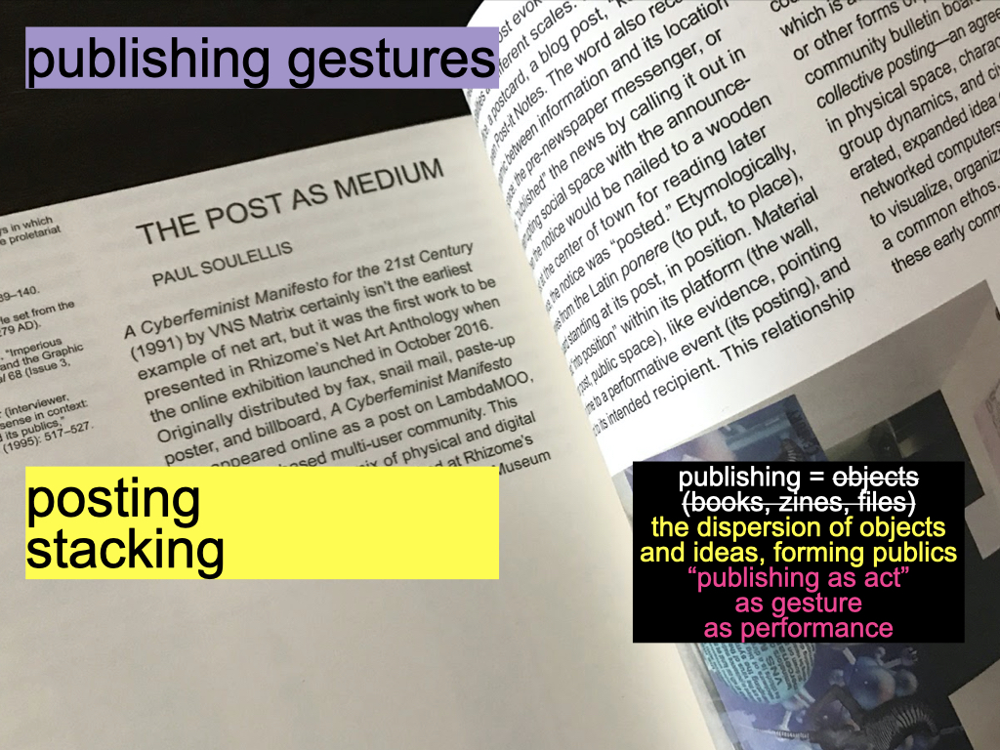
So beyond the post, there are a few other fundamental gestures of publishing. The next one is stacking.
58 / 141

Stacking is basic too, and brings to mind one of the most common ways to distribute printed material in public space. Use gravity! If it’s not posted on a wall, it’s probably sitting flat, stacked on a horizontal surface somewhere, like at a newsstand.
59 / 141
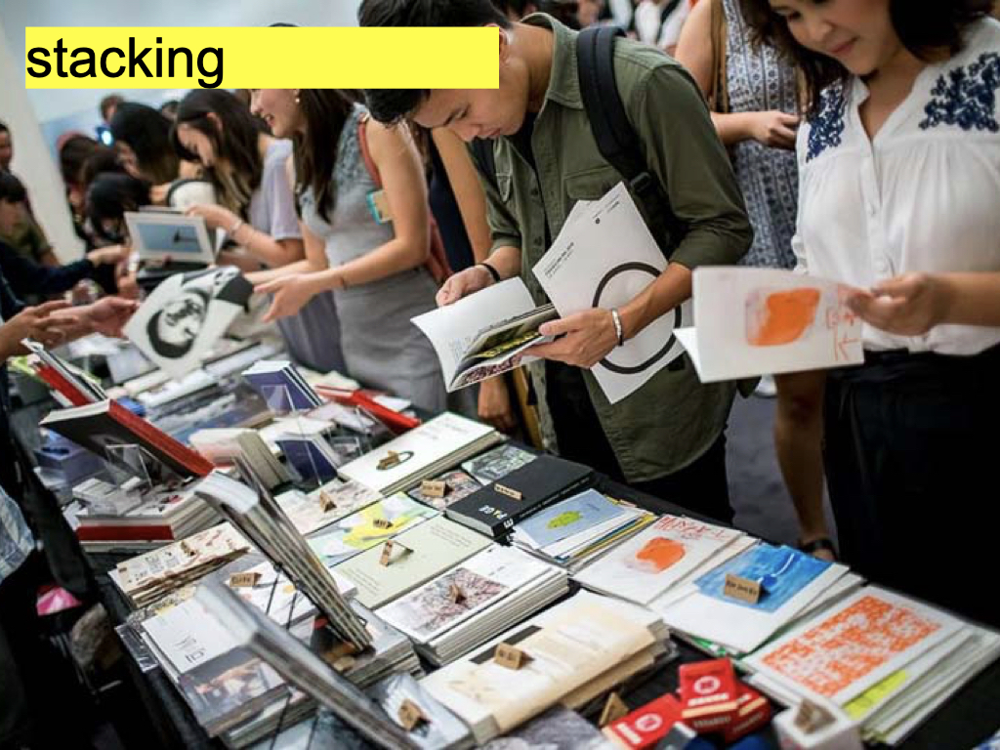
or a bookstore, or an art book fair,
60 / 141

or even just the idea of putting a table out in public, like this new project Library of Study in Brooklyn, where books curated around an abolitionist theme are put out in public for discussion and borrowing
61 / 141

or stacking prints on the floor, like this, at the Venice Biennale
62 / 141
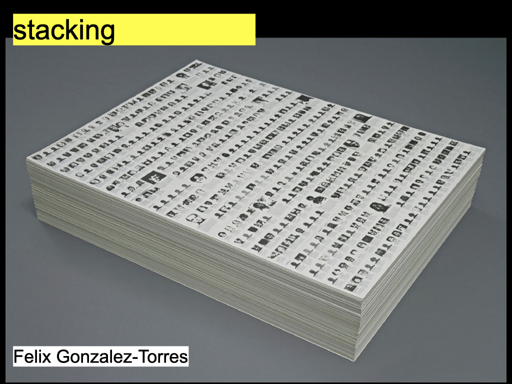
which of course we can’t talk about stacking without mentioning the artist Felix Gonzalez-Torres, who really invented the stack as a sculptural art form in itself
63 / 141

Felix’s stacks are unlimited, to be constantly replenished, so it’s a different take on monumentality — I would say he’s dismantling the idea of monument. The sculpture is less an object and more an act of publishing that’s always disappearing and re-forming itself
64 / 141

and if you’re interested in reading more about this, this is the only text I’ve ever been able to find on stacks, by Susan Tallman, The Ethos of the Edition, writing specifically about the stacks of Felix Gonzalez-Torres.
65 / 141

Dropping is another publishing gesture.
66 / 141

Dropping is much less common, but we know about it from images like this one,
67 / 141

which are really associated with propaganda and the state. The idea of forcing an act of publishing onto a territory. It’s about as impersonal as you can get, in that the author comes at you from above
68 / 141

and then disappears, dropping the message onto the land.
69 / 141

But dropping is also this — it’s the language we use to talk about transferring digital files
70 / 141

And we know it in a more everyday way like this — visualizing the act of publishing or sharing as passing files through the air, dropping them into someone’s device.
71 / 141

As a nice contrast, I really see this as dropping, too. We drop books off, and pick them up. This kind of dropping is less impersonal, almost intimate somehow, because of the location of these boxes in neighborhoods, in front of people’s homes.
72 / 141

Anastasia Kubrak has a project that mixes all of these ideas, where documents censored by the Russian government are printed and left in specially marked drop points all over the city
73 / 141

secret drop-off sites that are identified by this “X”
74 / 141

And then there’s Aram Bartholl’s Dead Drops project, which are USB drives embedded in architecture, all over the world. It’s an entirely offline project for the distribution of digital material.
75 / 141

The last publishing gesture that I’ll talk about is streaming, or really
76 / 141

feeds and streams. If you think about an individual tweet, it’s a single post. But these posts accumulate into feeds. The feed is a never-ending flow of posts, and for me this is the most important way to think about publishing today — the feeds we surround ourselves with, that we’re comforted by, that we nurture and take care of
77 / 141

If accumulating posts are a feed, then the non-stop feed is a stream. And so we have literal streamers, who perform live on youtube and twitch and tiktok, for hours or days at a time. If we had more time we could get into how this is different from the old, 20th century model of broadcasting.
78 / 141

In fact, the feed is nothing new … but in the modern, industrial revolution sense, feeds are the newest publishing gesture. I can’t find any reference to the feed as a flow of information prior to the 1840s, around the sudden invention of the telegraph. It’s no accident, I think, that the photograph was also invented at this moment … it just took a while for these technologies to merge.
79 / 141

Of course, this is what our feeds are turning into today … we no longer see them or recognize them as an accumulation of posts, but more like an ambient presence. If you think about the technology behind a device like this, it’s still about posting questions, and answers that are delivered back … but the experience is much smoother than that, because of how natural language is being used as the interface.
80 / 141

And so, for the first time, I think those distinctions between what is or isn’t publishing are becoming very blurry. Very ambiguous.
81 / 141
As we engage with non-stop streaming in a totalizing way, throughout all of our environments,
82 / 141

we’re seeing this collision and collapse between publishing, digital networks, and surveillance.
83 / 141

And this blurriness isn’t going anywhere … it’s becoming more and more ubiquitous and accepted. It’s a desire that we seem to have right now, as a society, to protect ourselves with this kind of structure, and the ideologies of profit and power that go along with it.
84 / 141

It’s crucial that we try to understand how this all works. The politics of our platforms. How the same streaming, always-on platforms that enable us to publish and communicate and entertain and protect and isolate ourselves
85 / 141

are the very same platforms being used by capitalism to profit and to persist, and by state institutions to surveil, to minoritize, and to criminalize.
86 / 141

It’s the ultimate smooth flow of interfaces that know us and envelope us now that I’m most concerned about. Not because I don’t enjoy them — but because I do. As designers, we find ourselves in a very particular contradiction here. How do we participate in this? How do we continue to design these most perfect interfaces, knowing what we do?
87 / 141

These are questions for each of you to grapple with, as students, as working designers, as anyone invested in how design participates in our political state right now.
88 / 141

My own battle with this takes the form of a demand: resist the smoothness of design perfection. I demand this of myself and in my teaching. It means always questioning — more than that, always deeply examining — the less visible ideologies that lurk behind the design products that govern how we live.
89 / 141

For me this means thinking about history, looking at archives as time machines, and dialing back over the course of the last 50 years to see how others have resisted and persisted. What can we learn from their ongoing struggles for liberation?
90 / 141

I’m particularly inspired by Barbara Smith, who was part of the Combahee River Collective in Boston in the 1970s, and who co-founded Kitchen Table Women of Color Press in the early 80s.
91 / 141

There’s a lot to learn from her, but specifically around publishing, there’s this quote. In this oral history she’s talking about a conversation she had with the poet Audre Lorde, about why they started Kitchen Table.
92 / 141

Radical publishing has been used throughout history as a form of survival, as a way to detach from mainstream structures of oppression like academia or commercial publishing, where whiteness, heteronormativity, capitalism, and settler colonialism have always been on full display. They still are. Groups like Kitchen Table and Come!Unity show us how values like collective care and collaboration and sharing were fundamental to this kind of publishing practice.
93 / 141

Some other strategies used in the ongoing movement towards liberation are interference, or agitation. Using visibility to interrupt the narrative.
94 / 141
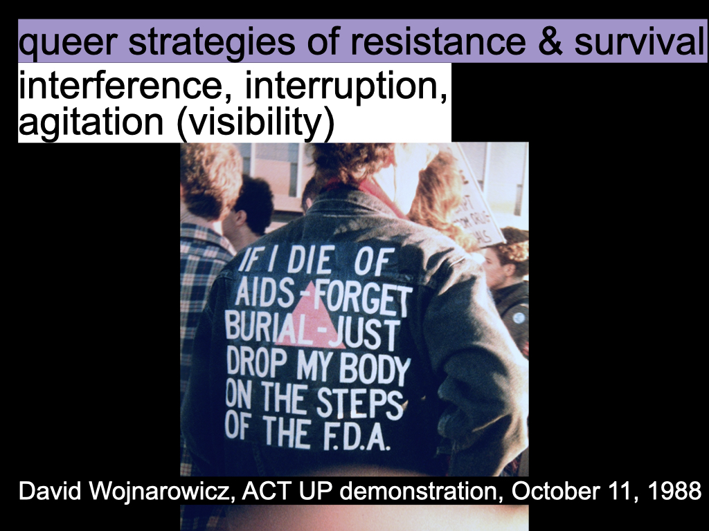
Which is why I love David Wojnarowicz’s jacket so much. He wore it to an ACT UP demonstration at the height of the AIDS pandemic. It’s an act of design, it’s art, it’s a gesture of making public — it’s an urgent artifact that contains the potential for radical action. It’s less the work of a specific artist who publishes than the plea of a political subject struggling in illness against state negligence, for communal responsibility and care.
95 / 141

Today, we find evidence of urgent artifacts like these everywhere, using visibility to agitate.
96 / 141

Parker Bright did something like this, using their body as a platform to both obscure the view of Dana Schutz’s controversial painting and to deliver the message Black Death Spectacle to an audience who photographed and posted the message all over social media, forever changing our read of the painting.
97 / 141

Wherever there is visibility, there is privilege — the ability to use one’s body and to have it read clearly. For many bodies this isn’t a safe strategy at all. And so refusal and illegibility are also tactics for us to look at here
98 / 141

And there is a whole range of artists who work against visibility today, particularly in the fight for transgender recognition, privacy, and human rights.
99 / 141

I also want to draw your attention to the work of American Artist, a Black artist who legally changed their name in 2013 as an act of refusal and illegibility, reframing both of the words: American and Artist. In refusing to use their birth name, they’re manipulating legibility as a way to deny and shape perception around who gets to claim those words, and how whiteness persists in art world spaces.
100 / 141

I don’t have enough time to get into it here, but if you don’t know their work and writing, please devote some of your attention to how American Artist is working today.
101 / 141
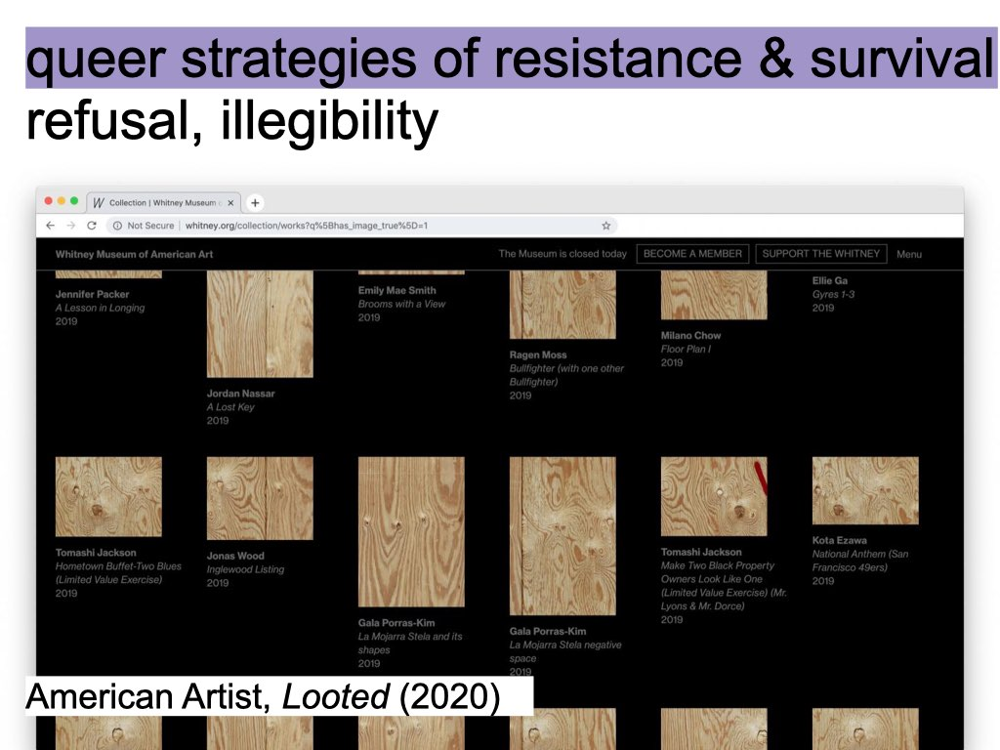
Specifically in how they use refusal and how they resist the ultimate smooth flow of mainstream design and art world perfection.
102 / 141

We’re approaching the end of the talk, and so for the remainder I’d like to tell you about what I’ve been working on lately, and how I’m trying to bring these queer strategies of resistance and survival into my own spaces, whether it’s my own practice, or in teaching, or in community building
103 / 141

I taught this new class last year, Urgency Lab, where we really experimented with staying with the mess, and what it might look like to step away from an institution like RISD and work outside of its values of exceptionalism, competition, and perfection
104 / 141

At the end of the semester we really hesitated to produce any kind of object or product at all, but we did publish this collaborative deck of cards, an Urgency Cookbook that simply foregrounds the values that emerged in the space of the class
105 / 141
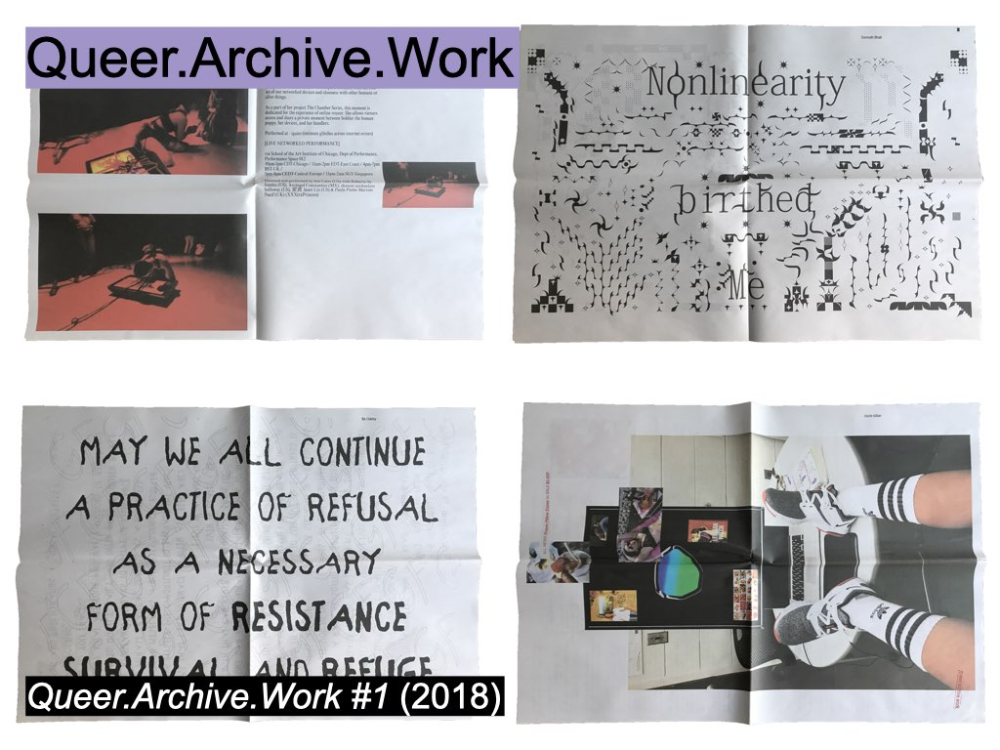
Outside of school, I’m continuing to publish, inviting artists and writers into collaborative spaces where we prioritize queer ways of working and expression
106 / 141

These are the artists who contributed to the first issue of Queer.Archive.Work, which launched in 2018
107 / 141

and here’s issue number #3. These are all unbound publications, which means everything’s loose, an assemblage of prints and zines, and it can all come apart, without fixing any one narrative.

109 / 141

And you can see the aesthetics of the mess are on full display here in our installation at the NYABF last year, but it’s not just the optics of it, of illegibility — it’s about de-prioritizing the quick, fixed read, and empowering readers to do the work of shaping the material themselves.

111 / 141

and another this year at the start of the pandemic, just as the east coast was starting its shutdown. This was an open call, and 110 contributors submitted work
112 / 141

It was also a mutual aid project, using grant funding to distribute money to all of the contributors, who either accepted the compensation or donated it back to the pool
113 / 141

and this was a tremendous learning experience for me, as a real community started to emerge from these urgency readers
114 / 141

a few more shots of the risograph prints. I acquired a risograph printer recently, which has radically changed how I’m making my work
115 / 141

giving me the power to really control how these things are made, and how they get produced and distributed
116 / 141

This year, I decided to relocate the risograph printer to a new space and open it up, and I created a non-profit organization called Queer.Archive.Work
117 / 141

This is now a community publishing space, open to anyone but prioritizing Queer and Trans, Black, Indigenous, and POC makers who may not have easy access to traditional art world spaces.
118 / 141

The heart of the space is the risograph printer as a tool of empowerment, as a way to gain control of the entire publishing process outside of traditional publishing spaces, even the so-called “alternative” or indie publishing scene, which is still so often white and cis and male and privileged.
119 / 141

Access to the space is always free. We’ve got this fantastic small library forming,
120 / 141

with zines and books and experimental publishing that I’ve been collecting and that people contribute to when they visit the space
121 / 141
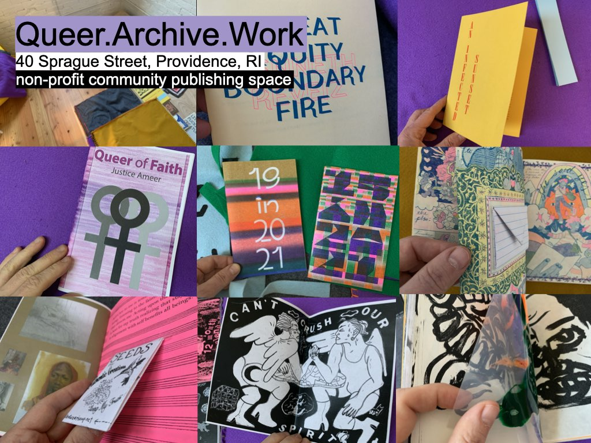
These are just some images from our collection, which has doubled in size since we opened earlier this year.
122 / 141
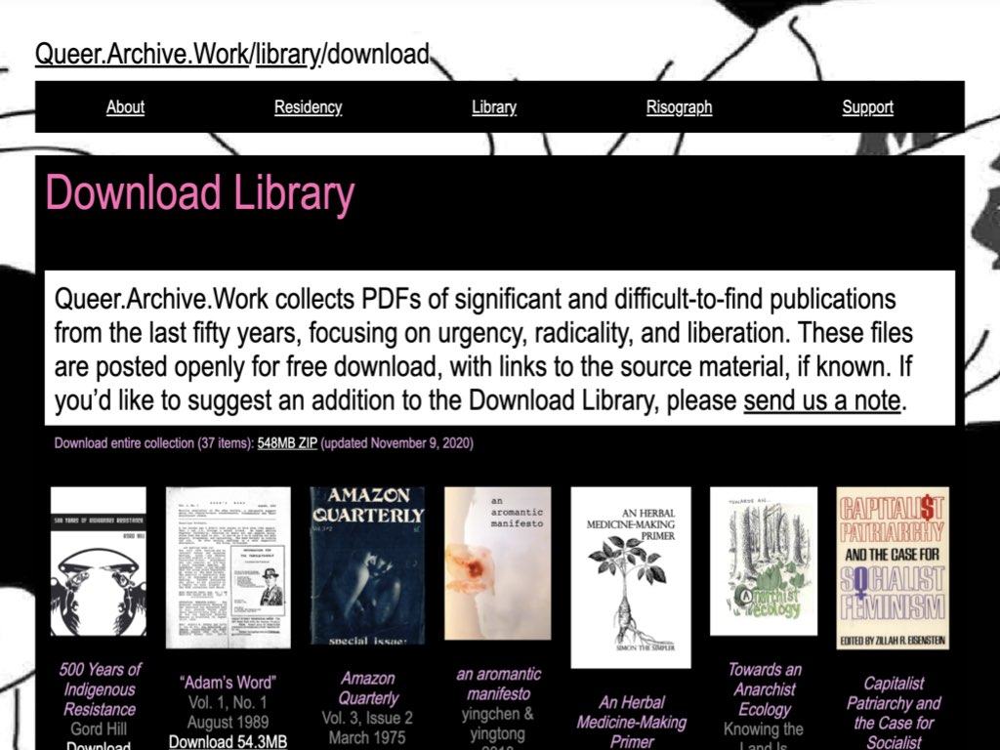
We recently started a Download Library which lets anyone online access the time machine of indie publishing as it relates to urgency, radical thinking, and liberation.
123 / 141
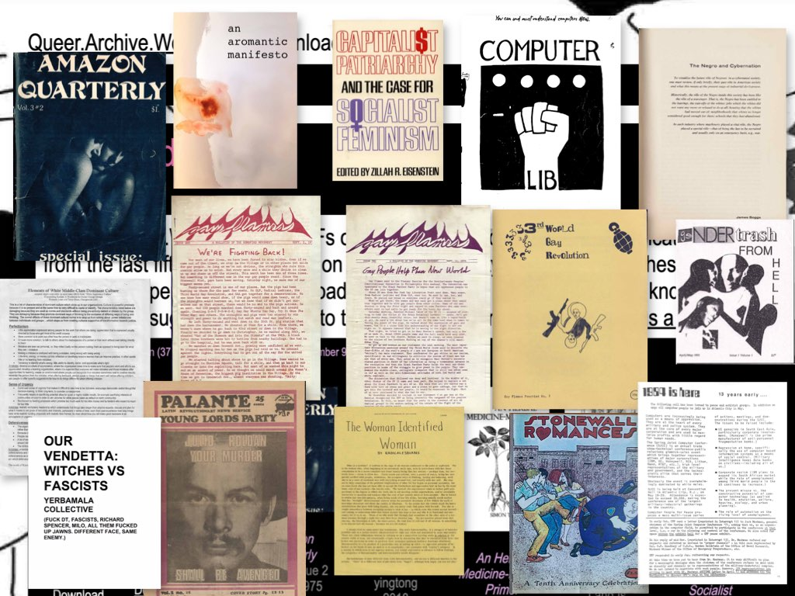
and it’s still small, but the PDFs in here are a treasure. I hope you spend some time with it to get inspired.
124 / 141

Just this week, we also launched a tool-sharing library here in Providence. This is a distributed library, meaning that
125 / 141

all of the items are stored in our homes and work spaces, and are available for anyone to use freely.
126 / 141

My dream has always been to bring financial and creative support to artists directly, so we started a series of riso residencies this summer and it’s been a huge success
127 / 141

We’ve got residents — half from Providence, half from outside of RI — arriving monthly. Each artist gets the entire studio for their own use, for up to 2 weeks, and a cash grant to help them with their work.
128 / 141
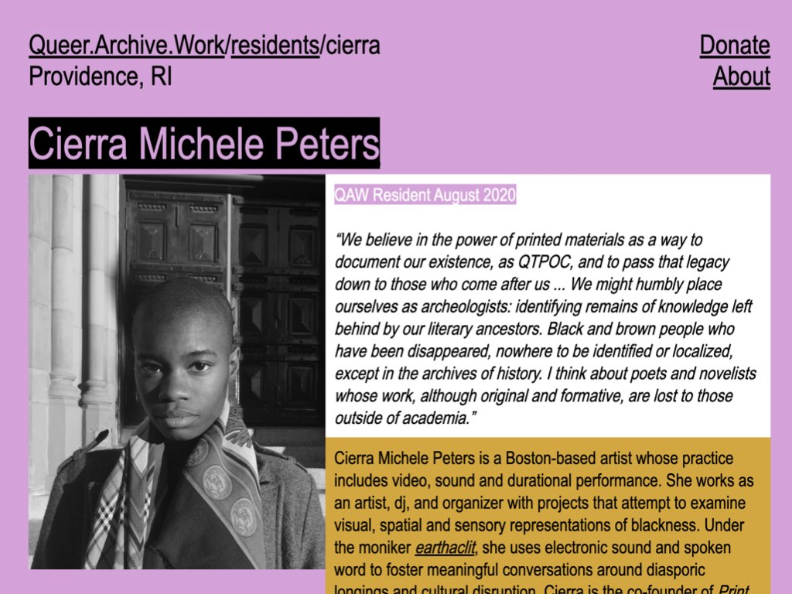
Cierra Michele Peters started us off in August. Cierra is the co-founder of Print Ain’t Dead, a bookstore of Black authors for Black readers in Boston, and she worked on starting their own small press while at QAW
129 / 141

she also runs these incredible Black study groups online, and produced a series of readers during her residency
130 / 141

Next up was Sloan Leo, a NYC-based artist and designer who was in residence in September
131 / 141

and just before they left they had an open studio, and led one-on-one guided tours through the space,

133 / 141
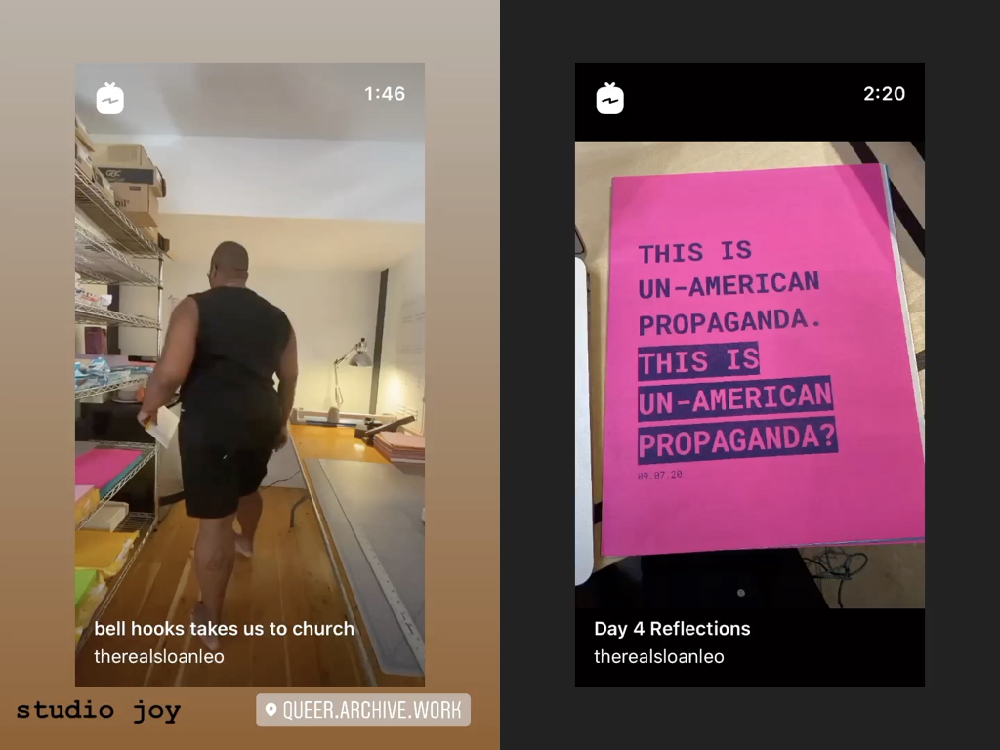
and they were really performative during the residency, posting on social media in a kind of diaristic, journaling kind of way, several times a day, which was just amazing to witness. I learned so much from them

135 / 141

and right now Jayson and Laila are in the space, two local high school students who are starting a new BIPOC literary zine for RI-based teens. They originally approached QAW about printing the zine but instead we invited them in for the whole month of November to learn about design and printing themselves. They’re really incredible.
136 / 141

It’s a slow process, building community. I’m learning a lot about what it means to gather, especially these days, on platforms like slack and instagram and zoom. I’m learning to slow down and to let things emerge, and to work at the speed of trust, which is an expression borrowed from Adrienne Maree Brown, who writes about it in their book Emergent Strategy.
137 / 141

And to really think counter-intuitively about urgency as a slow, ongoing commitment to maintenance and communal care.
138 / 141

Too often urgency is used to exert pressure and power over a situation, so I’m looking closely at how we use that idea in publishing. How urgency can be a call for the slow, ongoing work of communal care, away from institutions that use speed and highly visible results as a form of gatekeeping, as a way to make thoughtful decision-making really difficult
139 / 141

These days, I talk about these queer strategies of resistance and survival as a set of principles, and I’ve been calling Urgentcraft, but it’s really about prioritizing anti-racism, justice, and liberation in your work. I covered a bunch of these today in this talk but not all of them, so I hope you spend some time with this, and consider it my call to action for you.
140 / 141

As I said here at the end of this piece I wrote recently, Use the urgentcraft principles, re-shape them, add to them, share them. If nothing else, keep them around, as a reminder that art and design can be used to loosen power.
141 / 141